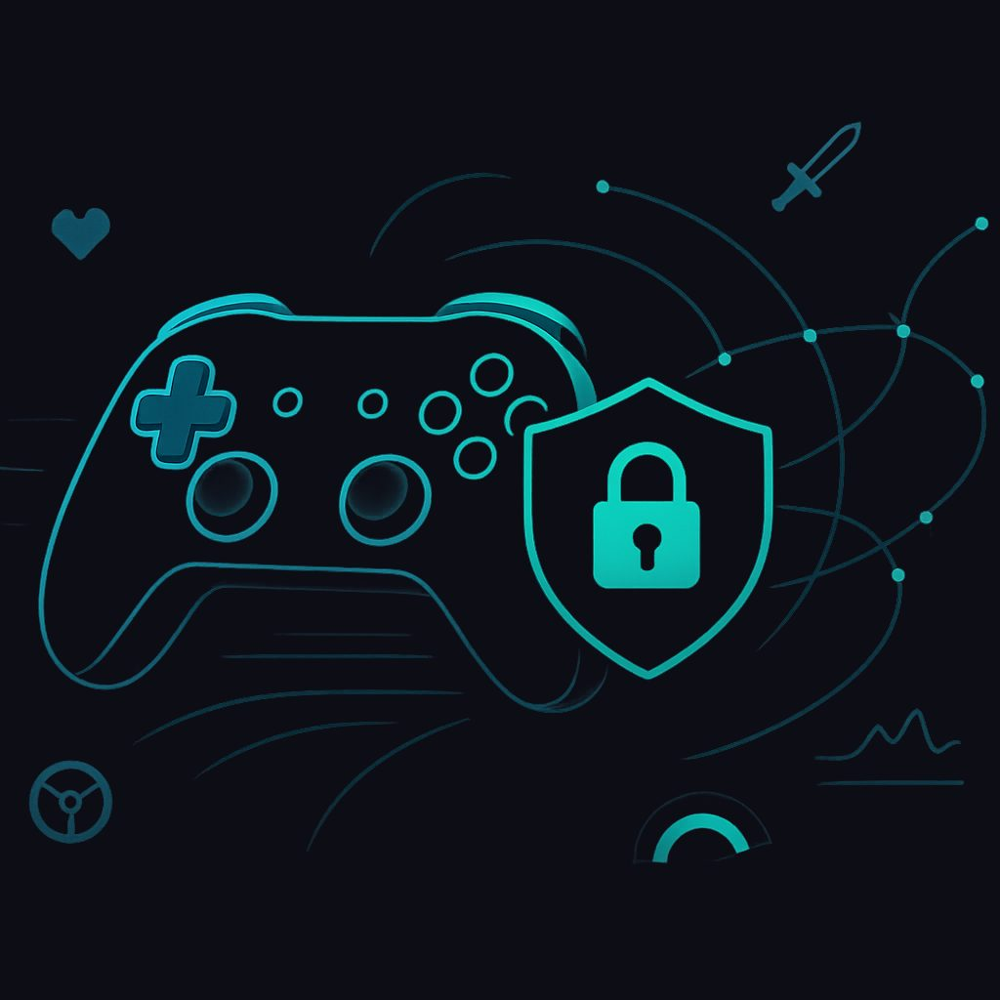

VPN для игр: Максимизируйте свой игровой опыт с NoBorder VPN
В современном мире онлайн-игр, где каждая миллисекунда и каждый байт данных имеют значение, использование виртуальной частной сети (VPN) становится не просто удобством, а порой необходимостью. NoBorder VPN предлагает геймерам мощный инструмент для улучшения их игрового опыта, обеспечивая безопасность, анонимность и, что немаловажно, оптимизацию сетевого соединения. В этой статье мы подробно рассмотрим, почему VPN так важен для геймеров, как он влияет на производительность, какие протоколы лучше использовать и как NoBorder VPN может стать вашим идеальным спутником в мире виртуальных приключений.
1. Зачем геймерам VPN: Обход блокировок, снижение пинга и доступ к региональным серверам
Использование VPN в игровом процессе может принести множество преимуществ, которые значительно улучшат ваш опыт. Эти преимущества выходят за рамки простой анонимности и затрагивают критически важные аспекты онлайн-игр.
Обход географических блокировок и цензуры
Одной из наиболее очевидных причин использования VPN является возможность обхода географических ограничений. Многие игры или их отдельные функции могут быть недоступны в определённых регионах по лицензионным соглашениям, политическим причинам или из-за цензуры. VPN позволяет вам изменить ваше виртуальное местоположение, подключившись к серверу в другой стране. Это открывает доступ к:
- Играм, недоступным в вашем регионе: Например, некоторые тайтлы могут быть выпущены раньше в одних странах, чем в других, или вообще не иметь релиза в вашем регионе.
- Региональным игровым магазинам: Цены на игры и внутриигровые предметы могут значительно отличаться в разных странах. VPN позволяет вам получить доступ к более выгодным предложениям.
- Сервисам, связанным с играми: Некоторые игровые платформы, стриминговые сервисы или форумы могут быть заблокированы в вашем регионе. VPN решает эту проблему.
Снижение пинга и уменьшение задержек
Пинг — это время, необходимое для передачи пакета данных от вашего компьютера до игрового сервера и обратно. Низкий пинг критически важен для соревновательных онлайн-игр, где каждая миллисекунда может решить исход матча. Высокий пинг приводит к "лагам", потере синхронизации и неприятному игровому опыту.
VPN может помочь снизить пинг в определённых сценариях. Ваш интернет-провайдер (ISP) может маршрутизировать ваш трафик неоптимальным образом, отправляя его через множество промежуточных узлов, что увеличивает задержку. VPN-провайдеры, особенно те, что ориентированы на геймеров, часто имеют оптимизированные маршруты к популярным игровым серверам. Подключаясь к VPN-серверу, который находится ближе к игровому серверу или имеет более прямой маршрут, чем ваш ISP, вы можете добиться уменьшения пинга.
Кроме того, VPN может помочь в обходе так называемого "троттлинга" (ограничения скорости) со стороны ISP. Некоторые провайдеры могут намеренно замедлять игровой трафик для определённых пользователей или в определённое время. Шифрованный VPN-трафик делает невозможным для ISP определить тип вашего трафика и, следовательно, применять к нему целенаправленные ограничения.
Доступ к региональным серверам и новым игрокам
Многие онлайн-игры разделены на региональные серверы для обеспечения лучшей производительности и более сбалансированного подбора игроков. Однако это также означает, что вы ограничены игрой с пользователями из вашего региона. VPN позволяет вам подключиться к серверу в другой стране и, таким образом, получить доступ к игровым серверам этого региона.
Это открывает возможности для:
- Игры с друзьями из других стран: Если ваши друзья находятся в другом регионе, VPN позволит вам присоединиться к ним.
- Поиска новых игроков и сообществ: Расширение географии поиска игроков может привести к более разнообразному и интересному игровому опыту.
- Участия в региональных турнирах и событиях: Некоторые игровые события могут быть доступны только для определённых регионов.
- Избегания перегруженных серверов: Если ваш региональный сервер перегружен, вы можете подключиться к менее загруженному серверу в другом регионе через VPN.
Защита от DDoS-атак
В соревновательных играх, особенно на высших уровнях, игроки иногда сталкиваются с злонамеренными атаками типа "отказ в обслуживании" (DDoS). Эти атаки направлены на перегрузку вашего интернет-соединения, что приводит к дисконнектам и невозможности играть. VPN скрывает ваш реальный IP-адрес, заменяя его IP-адресом VPN-сервера. Это делает вас гораздо менее уязвимым для прямых DDoS-атак, так как злоумышленники не могут нацелиться непосредственно на ваше домашнее соединение.
2. Влияет ли VPN на пинг: Честное объяснение
Вопрос о влиянии VPN на пинг часто вызывает споры. Важно понимать, что VPN не является волшебной палочкой, которая всегда снижает пинг. Его влияние зависит от множества факторов.
Когда VPN может снизить пинг
- Оптимизированный маршрут: Ваш интернет-провайдер (ISP) может маршрутизировать ваш игровой трафик неэффективно, отправляя его через множество промежуточных узлов, расположенных далеко от игрового сервера. VPN-провайдеры, особенно те, что ориентированы на геймеров, часто имеют высокоскоростные сети с оптимизированными маршрутами, которые могут быть более прямыми и эффективными к целевым игровым серверам. Если VPN-сервер находится на более прямом пути к игровому серверу, чем маршрут вашего ISP, пинг может снизиться.
- Обход "троттлинга" ISP: Некоторые интернет-провайдеры могут намеренно ограничивать скорость или приоритет определённого типа трафика, включая игровой, в часы пик или для определённых пользователей. Поскольку VPN шифрует ваш трафик, ваш ISP не может определить, что вы играете, и, следовательно, не может применить к нему целенаправленные ограничения. Это может привести к более стабильному и, возможно, более низкому пингу, если ваш ISP ранее применял троттлинг.
- Близость к игровому серверу: Если вы хотите играть на игровом сервере, который расположен далеко от вас (например, вы находитесь в России, а игровой сервер в США), подключение к VPN-серверу, который географически ближе к игровому серверу, чем ваш текущий провайдер, может дать более низкий пинг. Это особенно актуально, если ваш ISP имеет плохую связность с удалённым регионом.
Когда VPN может повысить пинг
- Дополнительный узел: В большинстве случаев, VPN добавляет ещё один "прыжок" (хоп) в вашем сетевом маршруте. Вместо того чтобы напрямую подключиться к игровому серверу, ваш трафик сначала идёт к VPN-серверу, а затем от него к игровому серверу. Каждый дополнительный узел вносит задержку. Если VPN-сервер находится дальше от вас или от игрового сервера, чем ваш текущий маршрут, пинг неизбежно возрастёт.
- Нагрузка на VPN-сервер: Если VPN-сервер перегружен большим количеством пользователей, его производительность может снизиться, что приведёт к увеличению задержек.
- Расстояние до VPN-сервера: Чем дальше VPN-сервер находится от вас, тем больше времени потребуется для передачи данных, что увеличит пинг. Важно выбирать VPN-сервер, который находится максимально близко к вам или к игровому серверу (в зависимости от вашей цели).
- Шифрование: Процесс шифрования и дешифрования данных, хотя и является быстрым на современных процессорах, всё же вносит минимальную дополнительную задержку. Для большинства современных протоколов и мощного оборудования эта задержка незначительна, но она существует.
Вывод
VPN может как снизить, так и повысить пинг. Ключ к успеху — это правильный выбор VPN-провайдера и сервера. Ищите провайдеров с высокоскоростными серверами, оптимизированными для игр, и выбирайте сервер, который предлагает наилучший маршрут к вашему целевому игровому серверу. Экспериментируйте с разными локациями серверов, чтобы найти оптимальную конфигурацию для конкретной игры и вашего местоположения.
3. Лучшие протоколы VPN для игр: VLESS Reality и сравнение с WireGuard
Выбор VPN-протокола играет ключевую роль в производительности и безопасности вашего игрового соединения. Разные протоколы имеют свои особенности, влияющие на скорость, стабильность и уровень шифрования.
VLESS Reality: Низкий overhead и высокая производительность
VLESS — это относительно новый, но быстро набирающий популярность протокол, разработанный как часть проекта Xray (форк V2Ray). Он отличается минимальным "overhead" (накладными расходами), что делает его чрезвычайно эффективным для передачи данных. В сочетании с технологией Reality, VLESS становится одним из лучших решений для геймеров.
- Низкий Overhead: VLESS разработан с акцентом на минимизацию количества дополнительной информации, которая добавляется к вашим данным при шифровании и туннелировании. Это означает, что больше пропускной способности используется для передачи игровых данных, а не для служебной информации протокола. Меньший overhead напрямую транслируется в более высокую скорость и потенциально более низкий пинг.
- Reality: Это инновационная технология, которая позволяет VLESS-трафику маскироваться под обычный, легитимный HTTPS-трафик. Это делает его крайне устойчивым к обнаружению и блокировке со стороны интернет-провайдеров и систем глубокой инспекции пакетов (DPI). Для геймеров это означает стабильное соединение без риска быть обнаруженным и заблокированным, что особенно важно в регионах с жёсткой цензурой.
- Высокая скорость и стабильность: Благодаря низкому overhead и эффективной архитектуре, VLESS Reality обеспечивает высокую скорость передачи данных и стабильное соединение, что критически важно для онлайн-игр.
- Безопасность: Несмотря на акцент на производительность, VLESS Reality не уступает в безопасности, используя надёжные алгоритмы шифрования для защиты ваших данных.
NoBorder VPN активно использует VLESS Reality, предоставляя геймерам одно из самых передовых и эффективных решений на рынке.
Сравнение с WireGuard
WireGuard — это ещё один современный VPN-протокол, который также ценится за свою скорость и эффективность. Он значительно превосходит старые протоколы, такие как OpenVPN, по производительности.
- Простота и компактность: WireGuard имеет гораздо меньшую кодовую базу по сравнению с OpenVPN, что делает его более простым для аудита и менее подверженным ошибкам.
- Высокая скорость: Благодаря своей компактности и использованию современных криптографических примитивов, WireGuard обеспечивает очень высокую скорость передачи данных и низкую задержку.
- Эффективное использование ресурсов: WireGuard потребляет меньше системных ресурсов, что может быть важно для мобильных устройств или старых компьютеров.
- Быстрое переподключение: WireGuard очень быстро устанавливает соединение и восстанавливается после временных обрывов.
Выбор между VLESS Reality и WireGuard для игр
Оба протокола являются отличным выбором для игр, предлагая значительные преимущества по сравнению с устаревшими решениями.
- VLESS Reality может быть предпочтительнее в условиях, где важна максимальная незаметность трафика для обхода строгой цензуры и блокировок, а также для получения максимально возможной скорости за счёт минимальных накладных расходов. Его способность маскироваться под обычный HTTPS-трафик делает его особенно устойчивым к обнаружению.
- WireGuard является отличным универсальным решением, предлагающим высокую скорость, стабильность и простоту. Он хорошо подходит для большинства сценариев, где нет жёстких требований к обходу DPI.
В конечном итоге, лучший протокол для вас может зависеть от вашего конкретного местоположения, интернет-провайдера и игровой ситуации. NoBorder VPN, предлагая VLESS Reality, предоставляет геймерам передовой инструмент, специально разработанный для обеспечения максимальной производительности и устойчивости в условиях современного интернета.
4. Какие игры требуют VPN в России: Актуальные ограничения
В последние годы ситуация с доступом к онлайн-играм и игровым сервисам в России значительно усложнилась. Множество компаний приостановили свою деятельность или полностью ушли с российского рынка, что привело к блокировке игр, невозможности совершать покупки и другим ограничениям. VPN становится ключевым инструментом для российских геймеров, чтобы сохранить доступ к любимым развлечениям.
Ограничения Steam и других игровых магазинов
Steam, как крупнейшая платформа цифровой дистрибуции игр, ввёл ряд ограничений для пользователей из России:
- Покупка игр: Многие издатели ограничили продажу своих игр в российском регионе Steam. Это означает, что вы не можете приобрести эти игры, даже если они доступны в других странах. VPN позволяет изменить ваш регион магазина и получить доступ к полному каталогу игр.
- Пополнение кошелька Steam: Возможности пополнения кошелька Steam для российских пользователей были значительно ограничены. VPN, в сочетании с международными платёжными системами (если они доступны), может помочь обойти эти ограничения.
- Региональные цены: Цены на игры могут значительно отличаться в разных регионах. Используя VPN, можно получить доступ к более выгодным предложениям в других странах.
- Доступ к сообществу и форумам: В некоторых случаях доступ к определённым разделам сообщества Steam или форумам игр может быть ограничен.
Аналогичные ограничения коснулись и других игровых магазинов, таких как Epic Games Store, GOG, а также платформ для покупки ключей.
Ограничения EA (Electronic Arts)
Electronic Arts одной из первых компаний прекратила продажу своих игр и контента в России и Беларуси. Это означает:
- Невозможность покупки новых игр: Все новые релизы и дополнения от EA недоступны для российских пользователей.
- Прекращение внутриигровых покупок: Покупка FIFA Points, Apex Coins и других внутриигровых валют стала невозможной.
- Ограничения доступа к EA App (Origin): Хотя сам клиент может работать, функционал по покупке и доступу к некоторым сервисам ограничен.
VPN позволяет обходить эти ограничения, изменяя ваше виртуальное местоположение на страну, где EA продолжает свою деятельность, открывая доступ к полноценному функционалу платформы.
Ограничения Riot Games (League of Legends, Valorant)
Riot Games также ввела ограничения, хотя и не столь строгие, как EA. Основные проблемы для российских игроков связаны с:
- Покупкой внутриигровой валюты: Возможности пополнения баланса для покупки RP (League of Legends), VP (Valorant) и других валют были ограничены или полностью прекращены через привычные платёжные системы.
- Доступ к региональным серверам: Хотя основные серверы доступны, могут возникать проблемы с маршрутизацией или доступом к определённым функциям.
VPN может помочь в совершении покупок через зарубежные платёжные системы, а также в оптимизации соединения с игровыми серверами.
Другие издатели и платформы
Список компаний, наложивших ограничения, постоянно пополняется. Среди них:
- Sony PlayStation Store: Полностью приостановил свою деятельность в России, сделав невозможным покупку игр и пополнение баланса. VPN необходим для доступа к зарубежным PS Store.
- Microsoft Xbox Store: Аналогично PlayStation, магазин Xbox недоступен для российских пользователей.
- Activ